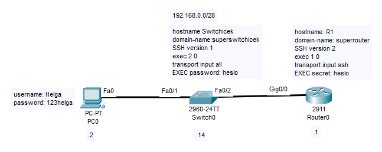

A
B
C
D
V dnešní době je už snad standardem, že routery a switche by měly být konfigurovatelné bez toho aniž bychom byli přímo v dané lokaci.
K tomuto se používá protokol SSH (Secure shell) a dříve používal Telnet (Teletype network).
Předtím než zařízení zpřístupníme pomocí SSH a telnetu, je vhodné daná zařízení zabezpečit tak, aby nedošlo k žádnému případnému zneužití.
Zabezpečit zařízení můžeme pomocí pouhých hesel nebo uživatelských přístupů.
Tohle zabezpečení probíhá na vty (virtual teletype) line konfiguračním módu, což je virtuální port, který slouží k tomu, abychom získali vzdálený přístup k zařízení právě pomocí SSH a telnetu.
Při přechodu do tohoto módu musíte určit rozpětí, který značí kolik hostů bude moct být naráz připojeno, přičemž nejvyšší počet hostů připojených najednou je 16.
Switchicek(config)#line vty 0 15
Pro zabezpečení pomocí jednoho univerzálního hesla pro všechny slouží příkaz:
Switchicek(config-line)#password {password}
Pro zapnutí autentizace se používá příkaz
Switchicek(config-line)#login
Tento příkaz ale sám o sobě není příliš bezpečný, protože heslo je v zařízení uloženo jako pouhý string, takže kdokoliv si jej může zobrazit.
Tenhle problém lze vyřešit tím, že v global config módu nastavíme zašifrování hesel.
Switchicek(config)#service password-encryption
Nicméně i tento příkaz je pouhou slabou ochranou (příkaz totiž heslo zašifruje tzv. type 7, který využívá substituční vigenerovu šifru s předem daným klíčem).
Úplně nejlepší způsob, jak zabezpečit síťové zařízení je pomocí AAA serveru, bohužel jeho nastavení je již nad rámec této kapitoly.
Alternativním způsobem k tomuto je zabezpečení pomocí uživatelských přístupů. Toto se nastavuje v global config módu pomocí příkazu:
Switchicek(config)#username {username} password {password}
Tento příkaz opět heslo ukládá v plaintextu, nicméně je zde způsob jak heslo uložit v MD5.
Switchicek(config)#username {username} secret {password}
K tomu abychom zapnuli přihlášení pomocí uživatelského přístupu musíme na vty line použít příkaz:
Switchicek(config)#login local
Použitím line vty módu lze ještě nastavit časovač neaktivity, po jehož vypršení vás zařízení odhlásí.
Switchicek(config-line)#exec {minuty} {sekundy}
Pro obě možnosti zabezpečení je také nutné nastavit heslo na EXEC mód pomocí příkazu:
Switchicek(config)#enable password/secret {password}
Password nám zas opět uloží heslo v plaintextu a secret v MD5.
Telnet je protokol, který umožňuje mít vzdálený přístup k zařízení.
Funguje tak, že se uživatel na dané zařízení připojí pomocí příkazové řádky užitím příkazu telnet u kterého specifikuje IP adresu či hostname zařízení.
Telnet používá standardně TCP port 23, tento port je "well-known" a doporučuji si ho zapamatovat.
Velká nevýhoda telnetu je, že posílá všechno v plaintextu, tudíž kdokoliv kdo zachytí nějakým způsobem komunikaci telnetu, si může vše včetně hesel přečíst.
Telnet na Cisco zařízení je standardně nastavený. Jediný co lze nastavit je absolutní povolení či zákaz pomocí příkazů.
Switchicek(config-line)#transport input {all | telnet | ssh | none}
SSH, Secure shell, je stejně jako telnet protokol, který nám umožňuje mít vzdálený přístup k zařízení.
Byl vyvinut v 90 letech jako náhrada za telnet.
Zatím existují 2 potažmo 3 verze - SSHv1, SSHv2 a SSHv1.99 (Tahle verze podporuje zpětnou kompabilitu a používá se výhradně na SSH serverech).
Verze se od sebe liší tím, že SSHv2 je oproti SSHv1 bezpečnější.
SSH využívá TCP port 22, stejně jako port telnetu si jej doporučuji zapamatovat.
K tomu abychom mohli používat SSH je třeba si nejdříve nastavit hostname a domain name:
Switchicek(config)#hostname {hostname}
Switchicek(config)#ip domain-name {domain-name}
Teď když máme hostname a domain-name je nutné si nechat vygenerovat rsa klíče. Ty slouží k tzv. public key authentication a generují se pomocí příkazu:
Switchicek(config)#crypto key generate rsa
Pokud budeme chtít používat SSHv2, tak tento klíč bude muset být alespoň 768bitový.
Dále je nutné dát heslo pro přístup na EXEC mód. Doporučuji také vytvořit uživatelský přístup a nakonfigurovat vty lines.
Je také možné změnit verzi ssh pomocí příkazu:
Switchicek(config)#ip ssh version {1-2}
Nastav SSH na routeru a switchi dle zadaní
Nejdřív začneme routerem:
Prvně nakonfigurujeme IP adresu na interfacu gig0/0
Router(config)#interface gig0/0 Router(config-if)#ip address 192.168.0.1 255.255.255.240 Router(config-if)#no shutdown
Dalším krokem bude nastavit hostname a domain name -
Router(config)#hostname R1 R1(config)#ip domain-name superrouter
Dále vygenerujeme rsa klíč, zde je nutné nezapomenout na to, že pro použití SSHv2 musí být alespoň 768bitový -
R1(config)#crypto key generate rsa How many bits in the modulus [512]: 768
Nyní nás čeká nastavit heslo na EXEC mód a vytvořit uživatele Helga -
R1(config)#enable secret heslo R1(config)#username Helga secret 123helga
Ještě nám schází nastavit vty line -
R1(config)#line vty 0 15 R1(config-line)#login local R1(config-line)#transport input ssh R1(config-line)exec 1 0
Nakonec nám zbývá ještě nastavit ssh verzi -
R1(config)#ssh version 2
Na switchi opět začneme konfigurací IP adresy, tentokrát na vlan 1.
Switch(config)#interface vlan 1 Switch(config-if)#ip address 192.168.0.14 255.255.255.240 Switch(config-if)#no shutdown
Dále nastavíme hostname a domain name -
Switch(config)#hostname Switchicek Switchicek(config)#ip domain-name superswitchicek
Dalším krokem bude klasicky generace rsa klíče, jehož velikost není vzhledem k SSH verzi nějak omezená.
Switchicek(config)#crypto key generate rsa How many bits in the modulus [512]: 360
Teď opět nastavíme heslo pro přístup na EXEC mód a uživatelský přístup
Switchicek(config)#enable password heslo Switchicek(config)#username Helga password 123helga
Ještě nám zbývá nakonfigurovat vty line
Switchicek(config)#line vty 0 15 Switchicek(config-line)#login local Switchicek(config-line)#transport input all Switchicek(config-line)exec 2 0
Nakonec nastavíme verzi ssh.
Switchicek(config)#ip ssh version 1
Základní konfiguraci SSH a Telnetu si můžete vyzkoušet zde.
| Příkazy | Popis | Mód |
|---|---|---|
| ip ssh version {1-2} | Nastaví ssh verzi | Global Config |
| ip domain-name {domain name} | Nastaví domain name | Global Config |
| hostname {hostname} | Nastaví specifický hostname | Global Config |
| username {username} password/secret {password} | Vytvořít uživatelský přístup | Global Config |
| enable password/secret | Nastaví heslo pro přístup na EXEC mód | Global Config |
| service password-encryption | Zašifruje heslo typem 7 | Global Config |
| crypto key generate rsa | Vytvoří rsa klíč | Global Config |
| crypto key zeroize rsa | Smaže rsa klíč | Global Config |
| line vty 0 {1-15} | Přechod do vty line módu | Global Config |
| transport input {all | none | ssh | telnet} | Povolí/zakáže dané protokoly | Vty line mód |
| login {*local} | Nastaví nutnost přihlášení při vzdáleném přístupu | Vty line mód |
| exec {minuty} {sekundy} | Nastaví časovač pro odpojení při neaktivitě | Vty line mód |
| show ip ssh | Zobrazí informace o SSH | EXEC |
SSH a telnet jsou protokoly, které hostům umožňují vzdálený přístup na zařízení.
Telnet je zastaralý protokol ze 60.let 20.století, jehož komunikace je plaintextová. Telnet operuje na TCP portu 23.
SSH, Secure Shell je protokol, který navazuje na telnet a jehož cílem je zprostředkovat zabezpečený vzdálený přístup. Má 2 verze - SSHv1 a SSHv2, ty se od sebe liší tím, že SSHv2 poskytuje lepší zabezpečení.
SSH funguje na TCP portu 22.
A
B
C
D